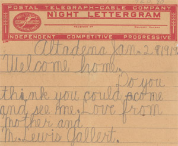

Home • World War One • Sydney Lewis Penhorwood • Canadian Forestry Corps • Royal Family & Canadian Corps
Private Edwin Durham • Second Battle of Ypres • Prisoner of War • Welcome Home
Welcome Home
On December 26, 1918 Durham boarded a train from Germany to Copenhagen where he then boarded a ship, The Ajan. The Ajan arrived in Leith, near Edinborough, and on January 1, 1919 the returning soldiers were piped ashore. The men were then given a good meal, a new uniform, some pay and three months leave. On May 5, 1919 Durham embarked on the ship The Mauretanis and arrived in Halifax on May 9. durham was discharged in Toronto on May 11 and traveled home by train that same day.
Canada would lose 60,661 of her young men with many more returning wounded and maimed. Canada's contribution and sacrifice during the war earned her an increased amount of autonomy from Britain and spurred on a growing sense of nationalism among Canadians. Memorials to those we died in the war sprang up in every small town across Canada. In Sault Ste. Marie, the citizens erected the Veterans War Memorial on Gore Street, the Cenotaph in front of the courthouse, and memorial cairns at the Locks and at the Abitibi Pulb and Paper Company.
Private Edwin Durham's Discharge Papers |
Letter sent to POW's From Buckingham Palace after their release |
Edwin Durham's Ticket home to Sault Ste. Marie from Toronto |
 Cable from Pte. Edwin Durham's Mother, upon his arrival in Britain |